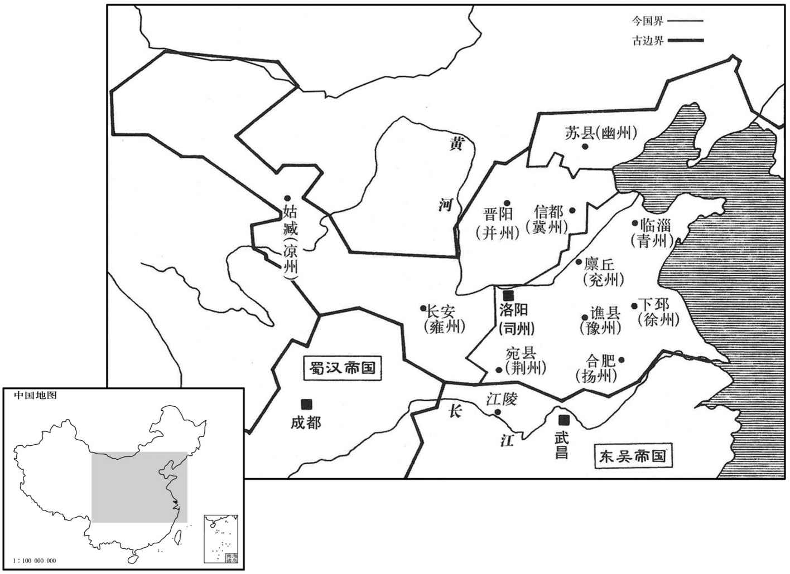

公元229年资治通鉴：本年记事、原文与白话对照
按原书编年位置阅读；追叙和史论不等于本年发生的事件。白话采用所据译本，缺译不以生成译文补齐。
卷71 · 本年记事
公元229年 · 魏烈祖明皇帝太和三年
三年〔（己酉、二二九）〕
上传原文的注释括号有异常，字符原样保留；无法可靠划分的段落默认全文显示。
本年事件索引（现代整理）

本年形势与背景参考图
春，汉诸葛亮遣其将陈戒攻武都、阴平二郡，〔阴平道，前汉属广汉，邵后汉属广汉属国都尉，魏分置阴平郡，唐为文州。雍州刺史郭淮引兵救之。〔禹贡：黑水西河为雍州。以其四山之地，故以雍名焉；亦谓西北之位，阳所不及，阴阳雍阏。周都丰、镐，雍州为王畿；平王东迁，雍州为秦地。汉武置十二州，以雍州之西偏为凉州，其余并属司隶。光武都洛，关中复置雍州，寻罢，复以司隶统三辅。献帝兴平元年，河西为河寇所隔，置雍州以统河西诸郡。至魏，以河西置凉州．以陇右为雍州。及晋，以陇右置秦州，而雍州统京兆、冯翊、扶风、安定、北地、新平、武都、阴平。雍，于用翻。〕亮自出至建威，〔水经注：汉水西南径祁山军南，西流与建安川水合。建安水导源建威西北山，东径建威城南，又东径西县、历城南。祝穆曰：天下之大川，以汉名者二，班固谓之东汉、西汉，而黎州之汉水源于飞越岭者不与焉。固之所谓东汉，则禹贡之漾汉，其源出于今与元之西县幡冢山，径洋、金房、均、襄、郢复至汉阳入江者是也。西汉汉则苏代所谓「汉中之甲，轻舟出于巴，乘夏水下汉四日而至五渚」者，其源出于西和州徼外，径阶沔川与嘉陵水会，俗谓之西汉；又径大安军、利、剑、阗、果、合与涪水会，至渝州入江。淮退，亮遂拔二郡以归；汉主复策拜亮为丞相。
本段缺少可靠对应白话，原文完整保留；未使用生成译文。
夏，四月，丙申，吴王即皇帝位，大赦，改元黄龙。〔时夏口、武昌廿共言黄龙见，权遂以改元。〕百官毕会，吴主归功周瑜。绥远将军张昭，举笏欲褒赞功德，未及言，〔沈约志：魏置将军四十号，绥远第十四。〕吴主曰：「如张公之计，今已乞食矣。」归功周瑜，以能拒曹公而成三分之业也。乞食，谓张昭欲迎曹公也。事见六十五卷汉献帝建安十三年。〕昭大凓，伏地流汗。吴主追尊父坚为武烈皇帝，兄策为长沙桓王，立子登为皇太子，封长沙桓王子绍为吴侯。
两版字句有差异，建议核对原文。
夏季，四月，丙申（十三日），吴王即皇帝位，大赦天下，改年号为黄龙。文武百官都来朝会，吴王把功劳归于周瑜。绥远将军张昭，举起板想要歌黛颂德，没等开口说话，吴王说：“如果当初听了张公的计议，现在已经要饭了。”张昭极为羞愧，伏在地上直流汗。吴王追尊父亲孙坚为武烈皇帝，哥哥孙策为长沙桓王，立儿子孙登为皇太子，封长沙桓王孙策的儿子孙绍为吴侯。
以诸葛恪为太子左辅，张休为右弼，顾谭为辅正，陈表为翼正都尉，〔辅正及翼正都尉皆吴自创置之。〕而谢景、范慎、羊醸等皆为宾客，〔醸，古道字。〕于是东宫号为多士。太子使侍中胡综作宾友目〔目者，因其人之才品为之品题也。〕曰：「英才卓越，超踰伦匹，则诸葛恪；精识时机，达幽究微，则顾谭；凝辩宏达，言能释结，则谢景；〔坚定也。宏，阔远也。达，明通也。好辩者每不能坚定其所守，故以能凝辩而证据宏远。明通者可以释难疑之纠结也。〕究学甄微，游夏同科，则范慎。」〔究，穷竟也。甄，察别也。夏，户雅翻。〕羊醸私驳综曰：「元逊才而疏，子嘿精而狠，叔发辩而浮，孝敬深而莅。」〔诸葛恪，字完逊；顾谭，字子嘿；谢景，字叔发；范慎，字孝敬。狠，户垦翻。莅，与狭同。〕醸卒以此言为恪等所恶，〔卒子恤翻。恶乌路翻。〕其后四人皆败，如醸所言
吴王任用诸葛恪为太子左辅，张休为右弼，顾谭为辅正，陈表为翼正都尉，而谢景、范慎、羊等都作为宾客，于是东宫号称人才济济。太子孙登让侍中胡综作《宾友目》说：“英才卓越，出类拔萃，是诸葛恪；精识时势，见解深刻，是顾谭；雄辩明达，言能释疑，是谢景；学问深邃，可与子游、子夏等同，是范慎。”羊私下反驳胡综说：“诸葛恪才大然而粗疏，顾谭精明然而残忍，谢景善辩然而浮浅，范慎精深然而狭窄。”羊终于因此言被诸葛恪等厌恶，以后这四人全都败倒，正中羊所言。
吴主使以并尊二帝之议往告于汉。汉人以为交之无益而名体弗顺，宜显明正义，绝其盟好。〔天无二日，土无二王，古今之正义也。好，呼到翻。〕丞相亮曰：「权有僭逆之心久矣，国家所以略其衅情者，求掎角之援也。〔衅，隙也。情，欲也。左传：戎子驹支对范宣子曰：「殽之师，晋御其上，戎亢其下，秦师不复，我诸戎车然，譬如捕鹿，晋人角之，诸戎掎之，与晋踣之」。杜预注曰：掎其足也。〕今若加显绝，雠我必深、当更移兵东戌，与之角力，须并其土，乃议中原。彼贤才尚多，将相辑穆，未可一朝定也。顿余相守，坐而须老，〔须待也。〕使北贼得计，非算之上者。〔贼，谓魏也。〕昔字文卑辞匈奴，先帝优与吴盟，〔事并见前。优，饶也，今人犹谓宽假为优饶。〕皆应权通变，深思远益，非若匹夫之忿者也。〔言所计者大也。〕今议者咸以权利在鼎足，石能并力，且志望已满，无上岸之情，〔谓孙权之志在保江，不能上岸而北向也。上，时掌翻。〕推此，皆似是而非也。何者﹖其智力不侔，故限江自保；权之不能越江，犹魏贼之不能渡汉，〔言魏不能渡汉而图江陵也，此汉，班志所谓东汉水也。〕非力有余，而利不取也。若大军致讨，彼高当分裂其地以为后规，下当略民广境，示武于内，非端坐者也。〔言蜀若破魏，吴亦将分功。〕若就其不动而睦于我，我之北伐，无东顾忧，河南之众不得尽西，此之为利，亦已深矣。〔言蜀与吴和，则虽倾国北伐，不须东顾以备吴，而魏河南之众，欲留备吴，不得尽西以抗蜀兵也。〕权僭逆之罪，未宜明也。」乃遣卫尉陈震使于吴，贺称尊号。吴主与汉人盟，约中分天下，以豫、青、徐、幽属吴，兖、冀、并、凉属汉，其司州之土，以函谷关为界。〔汉武帝置司隶校尉，所部三辅、三河诸郡，其界西得雍州之京兆、扶风、冯翊三郡，北得冀州之河东、河内二郡，东得豫州之河南、弘农二郡，位望隆乎牧伯，银印青绶，在十二部刺史之上。后汉省朔方刺史以隶并州，合司隶于十三部之数。魏以司隶所部河东、河南、河内、引农并冀州之平阳，合五郡置司州，以三辅还属雍州。此言司州以函谷关为界，以汉司隶所部分之也。〕
吴王派使者到蜀国通告他已即皇帝位，提议两国并尊二帝。蜀汉认为与吴国结交没有益处而且名号体制不顺，应该显明正义，断绝友好盟约。丞相诸葛亮说：“孙权有僭号篡逆之心已经很久了，我们国家所以不追究他的薄义寡情，是有求于他的犄角之援。现在如果公开断绝关系，吴国对我们仇恨必定加深，我们势必转移力加强东方防卫。与吴国对抗，必须先兼并吴国国土，才能谈论进取中原。可是，吴国贤能人才还很多，文武将相，团结和睦，不可能一朝平定。要是兵防守，师老兵疲，使得北敌得逞，这不是谋略之上策。以前孝文帝对匈奴出以谦卑之辞，先帝宽容大度与吴国结盟，都是权衡形势，随时变通，深思长远的利益，绝非如匹无一时忿恨用事。而今议论的人都以为孙权的利益在于鼎足之势，不能与我们合力，而且已经踌躇满志，没有北伐的愿望，这样推断，都是似是而非。为什么？是他的智谋和实力不够，所以以长江为界保全自己；孙权不能越江北上，犹如魏贼不能渡过汉水南下，不是力量有余，并且有利也不去夺取。若我们大军伐魏，孙权的上策应当先是分占魏的土地再作打算，不策当是劫掠民众开拓疆境，在国内显示武力，绝不会端坐不动的。即使他不动而与我们和睦相处，我们从北伐，没有东顾之忧，魏黄河以南的部队为了防备吴国，也不能全部向西调动，就是这一点利益，也已经够深远的了。孙权僭号篡逆之罪，不宜公开表明。”于是派遣卫尉陈震出使到吴，祝贺孙权称号登极。吴王与蜀汉结盟，约定将来平分天下，以豫、青、徐、幽四州属吴，兖、冀、并、凉四州属汉，司州地区以函谷关界划分。
张昭以老病上还官位及所统领，〔上，时掌翻。〕更拜辅吴将军，〔更，工衡翻。〕班亚三司，改封娄侯，〔娄，古县也，前汉属会稽郡，东汉分属吴郡，今苏州昆山县地。吴以封昭，非真国于娄而君国子民也。〕食邑万户。昭每朝见，〔见贤遍翻；下同。〕辞气壮厉，义形于色，曾已直言逆旨，〔「已」，当作「以」，古已、以字通。〕中不进见后汉使来，〔使疏吏翻；不同。〕称汉德美，而群臣莫能屈，吴主叹曰：「使张公在坐，〔坐，徂卧翻。〕彼不折则废，安复自夸乎！」〔折，屈也。李奇曰：废，失气也。晋灼曰：废，不收也。复，扶又翻；下同。〕明日，遣中使劳问，〔劳，力到翻。〕因请见昭，昭避席谢，吴主跪止之。昭坐定，仰曰：「昔太后、桓王不以老臣属陛下，而以陛下属老臣，〔太后，谓权母吴氏也。属，之欲翻。〕是以思尽臣节以报厚恩，而意虑浅短，违逆，盛旨。然臣愚心所以事国，志在忠益毕命而已；若乃变心易虑以偷荣取容，此臣所不能也！」吴主辞谢焉。
张昭因年老多病辞去官职，交回所辖部众，改为辅吴将军，班位次于三公，并改封为娄侯，食邑一万户。张昭每次朝见，辞严气盛，义形于色，曾以直言冒犯旨意，以后不肯来朝见。后来，蜀汉使节来到吴国，称赞蜀汉的美德，然而文武众臣都不能辩倒他。吴王叹息说：“假使张公在座，他不折不服，气焰也会收敛，怎么可能再自夸呢？”次日，由宫中派遣使者部侯张昭，接着亲自请见。张昭离开席位请罪，吴王跪下阻止了他。张昭坐定之后，仰起头说：“以前太后、桓王没有把老臣托付给陛下，而是把陛下托付给老臣，所以我是想竭尽臣节报答厚恩，然而见识肤浅，违逆陛下旨意。可是，我是一片愚拙之心为国效劳，志在忠心效命而已！如若变心，想要为了荣华富贵巴结奉承，这是我不能做的。”吴王连连辞谢。
元城哀王礼卒。
元城哀王曹礼去世。
六月，癸卯，繁阳王穆卒。
六月，癸卯（二十一日），繁阳王曹穆去世。
戊申，追尊高祖大长秋曰高皇帝，〔大长秋，汉宦者曹腾也。〕夫人吴氏曰高皇后。
戊申（二十六日），魏明帝追尊曹氏高祖汉大长秋曹腾为高皇帝，夫人吴氏为高皇后。
秋，七月诏曰：「礼，王后无嗣，择建支子以继大宗，〔嫡子之出相承为宗子，庶子之出为支子。支，岐出也。〕则当纂正统而奉公义，何得复顾私亲哉！汉宣继昭帝后，加悼考以皇号；〔事见二十五卷元康元年。〕哀帝以外藩援立，而董宏等称引亡秦，惑误时朝，〔朝，直遥翻。〕既尊恭皇，立庙京都，又宠藩妾，使比长信，叙昭穆于前殿，〔昭，读曰続，如遥翻。〕并四位于东宫，僭差无度，人神弗佑，而非罪师丹忠正之谏，用致丁、传焚如之祸。〔序昭穆于前殿，谓定陶恭皇与元帝序昭穆也。东宫，谓太后宫。四位，谓丁、传、赵后与元后并称太后，事具见三十四卷、三十五卷。〕自是之后，相踵行之〔。谓汉安帝尊父清河孝王为孝德皇，桓帝尊祖河间孝王为孝穆皇，公蠡吾志为孝崇皇，灵帝尊祖河间王淑为孝元皇，父解渎亭侯苌为孝竺皇，其妃皆尊为后也。〕昔鲁文逆祀，罪由夏父；宋国非度，讥在华元。〔春秋：文公二年，大事于太庙，跻僖公；逆祀也。于是夏公弗忌为宗伯，且明见曰：「吾见新鬼大，旧鬼小，先大后小，顺也。跻圣贤，明也。」君子以为失礼。礼无不顺。祀，国之大事也，而逆之，可谓礼乎！成公二年，宋文公卒，始厚葬，用蜃炭，益车马，始用殉，重器备。君子谓华元于是乎不臣。华，户化翻。〕其令公卿有司，深以前世行事为戒，后嗣万一有由诸侯入奉大统，则当明为人后之义；敢为佞邪导谀时君，妄建非正之号，以干正统，谓考为皇，称妣为后，则股肱大臣，诛之无赦。其书之金策，藏之宗庙，着于令典！」〔帝无子，知必以支孽为后，故豫下此诏，以约饬为人子为人臣者。
两版字句有差异，建议核对原文。
秋季，七月，明帝颁布诏书说：“古礼规定，王后没有儿子时，遴选庶子继承大宗，就应当继承正统而奉公义，怎么能再主个人亲情！汉宣帝继承昭帝的帝位，追加生父皇号；哀帝以封国国君身分即位，而董宏等竟然引用灭亡的秦国为例，迷惑当时朝廷，既尊称生父为恭皇，在京城建立祭庙，又宠用藩国妃妾，使她和长信宫的太皇太后并相比同。在朝廷前殿叙论亲疏远近，后宫同时并立四位太后，超越身分，毫无节制，人神都不保佑，而非难归罪于忠正规劝的师丹，这样就招致了丁太后、傅太后墓被王莽发掘的祸事。自此以后，继位君王接连效法。从前鲁文公违反傺祀礼议，这种逆祀之罪是由于夏父胡言诱惑；宋文公厚葬过度，大臣华元受到指责。现在我下令公、卿、主官，深刻地以前代所行之事为戒，皇室后裔中万一有由诸侯身分继承帝位的，就应当明白入嗣继承的大义。有谁胆敢用佞邪之词诱惑庚媚当时君主，图为已死的父母建立非正统尊号，干犯正统，称已死的父亲为皇，称已死的母亲为后，那么你们这些国家重臣，要对那些佞臣诛杀不赦。这份诏书要用金写在简册上，藏在宗庙之中，载入国家法典。”
九月，吴主迁都建业，皆因故府，不复增改，〔复扶又翻。〕留太子登及尚书九官于武昌，〔九官，九卿也。〕使上大将军陆逊辅太子，并掌荆州及豫章三郡事，董督军国。〔吴于大将军之上复置上大将军。三郡，豫章、鄱阳、庐陵也。三郡本属扬州，而地接荆州，又有山越，易相扇动，故使逊兼掌之。
本段缺少可靠对应白话，原文完整保留；未使用生成译文。
南阳刘廙尝着先刑后礼论，〔廙，羊职翻，又羊至翻。〕同郡谢景称之于逊逊呵之曰：「礼之长于刑久矣；〔长，知两翻。〕廙以细辩而诡先圣之教，〔诡，异也，戾也。〕君今侍东宫，宜遵仁义以彰德音，若彼之谈，不须讲也！」
南阳人刘曾经著《先刑后礼论》，同郡人高等景向陆逊称赞这部书，陆逊呵斥说：“礼仪为首，先于刑法，已很久了，刘用繁琐的辩解违背先圣的教化，你现在在太子宫中任职，理应遵照仁义之礼以宣扬恩德之音，象刘那样的言论，没必要讲！”
太子与西陵都督步骘书，〔吴保江南，凡道要之地皆置督，独西陵置都督，以国之西门统摄要重也。杜佑曰：西陵，今夷陵郡。骘，之日翻。〕求见吞诲，骘于是于时事业在荆州界者及诸僚吏行能以报之，〔行，下孟翻。〕因上疏奖劝曰：「臣闻人君不亲小事，使百官有司各任其职，故舜命九贤，则无所用心，不下庙堂而天下治也。〔舜命九官：禹作司空，宅百揆，契作司徒，弃后稷，皋陶作士，益作朕虞，垂共工，夷作秩宗，龙作纳言，夔典乐。治，直吏翻。〕故贤人所在，折冲万里，〔晏子春秋曰：晋平公欲攻齐，使范昭观焉，景公觞之。范昭曰：「愿请君之弃爵。」景公曰：「诺。」已饮，晏子命彻尊更之。范昭归，以报晋平公曰：「齐未可伐也，吾欲耻其君而晏子知之。」仲尼闻之曰：「起于尊俎之间，而折冲千里之外。」汉何武上封事曰：「虞有宫之奇，晋献不寐；卫青在位，淮南寝谋。故贤人立朝，折冲厌难，胜于无形。」〕信国家之利器，崇替之所由也。愿明太子重以经意，则天下辛甚！」
太子孙登给西陵都步骘写信，请求指教。步骘于是把当时荆州界内情况和各官吏的品行才能一一分析报告，并上书鼓励规劝说：“我听说君王不亲临小事，而是让各级官吏尽忠职守，所以舜帝任用九位贤人，自己不用再操心，不出庙堂而天下便行到治理。所以贤人所在之地，能抵御万里之外的敌人，他们实在是国家的杰出人才，兴哀的关键。愿使太子明晓重视，深加留意，这就是天下的大幸运了！”
张纮还吴迎家，道病卒。临因，授子〔【章：毋十六行本「子」下有「靖」字；乙十一行本同；孔本同；张校同；退斋校同。】〕留笺〔留笺，今遗表也。〕曰：「自古有国有家者，咸欲修德政以比隆盛世，至于其治，多不馨香，〔书君陈曰：至治馨香，感于神明。治，直吏翻；下同。〕非无忠臣贤佐也。由主不胜其情，弗能用耳。夫情惮难而趋易，好同而恶异，〔易，豉翻。好，呼到翻。恶，乌路翻。〕与治道相反。传曰：『从善如登，从恶如崩』，言善之难也。人君承奕世之基，据自然之势，操八柄之威，〔周礼，天官：太宰以八柄诏王驭群臣：一曰爵以驭其贵，二曰禄以驭其富，三曰予以驭其幸，四曰置以驭其行，五曰生以驭其福，六曰夺以驭其贫，七日曰废以驭其罪，八曰诛以驭其过。操，千高翻。〕甘易同之欢，〔易，以豉翻。〕无假取于人，而忠臣挟难进之术，吐逆耳之言，其不合也。不亦宜乎！离则有衅，〔言纳忠而不合于上，则上下之情离，衅隙由此而生也。〕巧辩缘间，〔间，古苋翻。〕眩于小忠，恋于因爱，贤愚杂错，黜陟失序，其所由来，情乱之也。故明君寤之，求贤如饥渴，受谏而不厌，抑情损欲，以义割恩，则上无偏谬之授，下无希冀之望矣！」吴主省书，为之流涕。〔省，悉景翻。为，于伪翻。〕
张回吴郡迎接家眷，中途病死去。临终时，将写好的遗表交给儿子。遗表说：“自到来主持国家的人，全都打算修行德政与太平盛世相媲美。至于治理的结果，多不能实现，不是没有忠臣贤能辅佐，而是由于主上不能克制自己的私情，不能任用他们。人之常情都是畏惧艰难，趋就容易，喜好相同意见，厌恶不同意见，这与治国之道正好相反。古书上说，‘从善如同登山，从恶如同山崩’，是比喻为善多么因难。君王承袭祖先累世的基业，据有至尊的自然之势，有掌握天下八种权柄的威严，喜好容易受到赞同带来的欢快，无需听 取采纳别人意见，而忠义之臣提出难以采纳的方案，说出逆耳的言语，与君王不能契合，不也正当如此吗！君王与忠臣疏远就会出现袭痕，花言巧语之人借机离间，君王被这点所谓有忠心搞得迷迷糊糊，迷恋于个人私恩错爱，使得贤明和愚下混在一起，罢免和进用都失去标准，这种情形由来的原因，是私情作怪。所以圣明的君王明察此情，求访贤能如饥似渴，接受规劝而不厌烦，抑制私情，损减私俗，出于大义割舍私恩，那么上面没有偏颇错廖的任用，下面也就不抱非分之想了。”吴王读着这封遗书，感动得流出热泪。
冬，十月，改平望观曰听讼观。〔水经注：平望观在华林园东南，天渊池水径观南。观，古玩翻。〕帝常言：「狱者，天下之性命也。」每断大狱，常诣观听之。〔断，丁乱翻。〕初，魏文侯师李悝着法经六篇，悝，苦回翻。汉艺文志：法家者流，李子三十二篇。注云：李悝相魏，富国强兵。今言法经六篇，盖其书有经有解，若韩非子也。〕商君受之以相秦。萧何定汉律，益为九篇，后稍增至六十篇。又有今三百余篇，决事比九百六卷，〔师古曰：比，以例相比况也。程大昌曰：古书皆卷，至唐始为叶子，今书册也。〕世有增损，错糅无常，糅，女救翻，杂也。〕后人各为章句，马、邺诸十儒十有余家，〔马、邺，马融、郑玄也。〕以至于魏，所当用者合二万六千二百七二条，七百七十三万余言，览者益难。帝仍诏但用郑氏章句。尚书卫觊奏曰：〔觊，音冀。「刑法者，国家之所贵重而私议之所轻贱；狱吏者，百姓之所县命〔县，读曰悬。〕而选用者之所卑下。王政之敝，未必不由此也；请置律博士。」帝从之。〔晋职官志：律博士，属廷尉。〕又诏司空陈群、散骑常侍刘邵等删约汉法，制新律十八篇，州郡令四十五篇，尚书官今、军中今合百八十余篇，〔州郡今，用之刺史、太守；尚书今，用之于国；军中今，用之于军。〕于正律九篇为增，于旁章科令为省矣。
两版字句有差异，建议核对原文。
冬季，十月，魏改平望观为听讼观。明帝常说：“刑狱之事，关系天下人的性命。”每次判决重要刑事案件，经常到听讼观临听。以前，魏文侯老师李悝著《法经》六篇，商鞅接受了其中的思想以辅佐秦国，萧何制定《汉律》，增加到九篇，以后逐渐增到六十篇。又有《令》三百余篇，《决事比》九百零六卷。世代都有增加和减光，错杂无常。后代人又各自逐章逐句作注，有马融、郑玄等儒学大师十余家，以至到了魏，能够适用的总计有二万六千二百七十二条，七百七十三万余言，阅读愈加困难。明帝于是诏，只采用郑氏注。尚书卫觊上奏说：“刑法，对于国家非常宝贵重要，但却被人们私下议论时所轻视；监狱官吏，掌握着百姓性命，但却被任用者所鄙屑。国家败坏，未必不是由于这一缘故。请设置法律博士。”明帝睬纳了他的意见。又下诏命司空陈群、散骑常侍刘邵等修改汉朝法规，制定《新律》十八篇，《州郡令》四十五篇，《尚书官令》、《军中令》合计一百八十余篇，虽然比萧何《正律》九篇有所增加，但比其它附属法令精减了。
本段人物：萧何
十一月，洛阳庙成，〔元年，初营宗庙，至是而成。〕迎高、太武、文四神主于邺。〔高帝，汉大长秋曹腾；太帝，汉太尉曹嵩。裴松之曰：魏初唯立亲庙，四祀四室而已，至景初元年，始定七庙之制。〕
十一月，洛阳皇家宗庙建成，从邺城迎来高帝、太帝、武帝、文帝四位先祖的灵位供奉。
十二月，雍丘王植徙封东阿。
十二月，雍丘王曹植被迁徙，封于东阿。
汉丞相亮徙府营于南山下原上，筑汉城于沔阳，筑乐城于成固。〔沔阳、成固二县，皆属汉中郡。水经注：沔水径白马戌城南，城即阳平关也。又东径武侯垒南，诸葛武侯所居也。又东径沔阳故城南，城南对定军山。又东过南邺县，又东过成固县南。如此，则汉城在南郑西，乐城在南郑东也。又南郑县东南百八十里有梁州山，与孤云两角山相接，大山四围，其中三十里许，甚平。或云：古梁州治也。杜佑曰：乐城在梁州西县西南。杜佑曰：洋州兴道县，汉城固县地，蜀之兴势。宋白曰：兴势，山名，在兴道县西北二十里洋州管下。西乡县，本成固县地。
本段缺少可靠对应白话，原文完整保留；未使用生成译文。
译本中未与胡注本可靠对应的内容
以下另列供核对版本差异，不并入胡注本正文。
译本所附古文
[1]春，汉诸葛亮遣其将陈戒攻武都、阴平二郡，雍州刺史郭准引兵救之。亮自出至建威，淮退，亮遂拔二郡以归；汉主复策拜亮为丞相。
译本白话
春季，蜀汉诸葛亮派遣部将陈戒攻打武都、阴平二郡，率领州刺史郭准领兵前去相救。诸葛亮亲自抵达建威城，郭准退去，诸葛亮于是攻下二郡回帅，汉王又委诸葛亮为丞相。
译本所附古文
[7]九月，吴主迁都建业，皆因会，不复增改，留太子登及尚书九官于武昌，使上大将军陆逊辅太子，并掌荆州及豫章三郡事，董督军国。
译本白话
九月，吴王迁都建业，全部承用原有的宫室王府，不再增设改建，留下太子孙登及尚书九卿在武昌，让大将军陆逊辅佐太子，并掌管荆州及豫章三郡事务，监督全国的军政大事。
译本所附古文
[11]汉丞相帝徙府营于南山下原上，筑汉城于沔阳，筑东城于成固。
译本白话
汉丞相诸葛亮把相府、军营迁移到南山下的平原上，在沔阳县修建汉城，在成固县修建乐城。